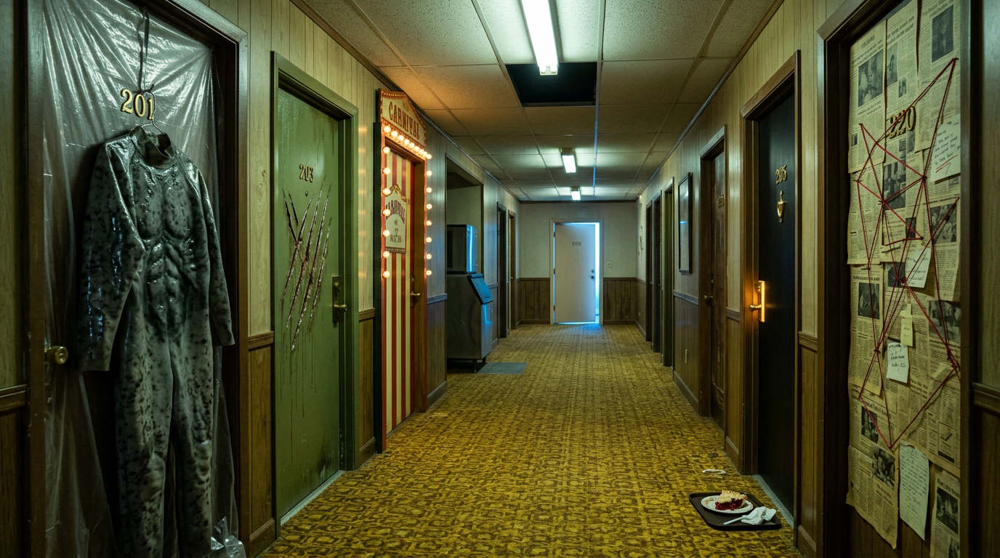

Why I Loved The Last Jedi (and Why the Fans Got It Wrong)
I Loved The Last Jedi Because I Cheated, and Your Favorite Franchise Is Dying of Photocopies
I’m about to say something that gets a man uninvited from barbecues.
I loved The Last Jedi.
Not liked. Not “had some interesting ideas.” LOVED. I’d like that statement entered into the record before the mob finds my address and the neighbors start pretending they never knew me.
Put the pitchfork down. You can pick it back up in the comments, I’ll even leave the porch light on for you. But first you’re going to hear me out, because I’ve got a cheat code, and the cheat code turns out to explain why every franchise you love is slowly turning into wallpaper.
Let’s Get the Bad Parts Out of the Way
I’m not a zealot. The movie has bruises and I’ll point at them myself.
Leia floating through the vacuum of space like Mary Poppins after a decompression incident. I know what it was going for. I also know what it looked like, and what it looked like was a woman being gently returned to a starship by an invisible stagehand.
The casino planet. Canto Bight. A side quest to a space Monaco so two characters can free a herd of racing space-horses, which is a PETA pamphlet wearing a tuxedo, approved by a man who has never once been to an actual casino. Forty minutes of the movie’s oxygen went to a moral about arms dealers that the film then forgot it had.
Two bruises. I’m not going to pretend they’re beauty marks.
Now here’s the rest of it.
Let the Past Die
The Last Jedi takes the most sacred family business in pop culture, the Skywalker saga, a dynasty run for forty years like a Sicilian deli where only blood relatives work the register, and puts it on the operating table.
Luke Skywalker, the boy who blew up the Death Star, is handed his father’s lightsaber in the first scene and throws it over his shoulder like a used napkin. Then he goes and milks a giant alien sea cow and drinks the green stuff straight from the source, staring at Rey the whole time like a man who no longer owes anybody anything.
Rey’s parents? Nobodies. Junk traders. Drunks, sold her for drinking money. The Force doesn’t care who your daddy was. The most hated reveal in the trilogy is also the only one that opens the galaxy back up to everybody who wasn’t born a Skywalker, which is, last I checked, every single person in the audience.
And Kylo Ren says the line out loud, so nobody could miss it: let the past die. Kill it if you have to.
That’s not a villain line. That’s the director’s memo, read aloud by a man in a cape.
What it did, and why I still think it was brilliant, is cut a door in the wall. Up to that point, Star Wars on screen was one family’s photo album. After it, the galaxy could be anybody’s. It could finally look like the old Expanded Universe, the decades of novels, comics and games that Lucasfilm rebranded as Legends in April 2014 when it cleared the decks for the new trilogy. Timothy Zahn’s Heir to the Empire came out in 1991 and basically resurrected the franchise in print with no Skywalker DNA required beyond a cameo. I’ll take any Zahn with Thrawn in it, but my favorite is the second Thrawn duology, Specter of the Past and Vision of the Future, where Thrawn is dead and what’s left of the Empire tries to prop a fake one up on the throne. A con man in a blue face and a borrowed uniform, playing the greatest tactician in the galaxy like a dinner-theater understudy who never got the call. And it ends with the New Republic and the Imperial Remnant finally signing a peace. Not a Death Star. Not a duel. A treaty. The war just… ends, because everybody’s too tired and too old to keep it going.
That’s a Star Wars story nobody would greenlight for the screen, and it’s one of the best ones ever written.
Those venues were amazing. Some still are. The movie pointed straight at them.
The Cheat Code
Here’s the part where I come clean.
I walked into The Last Jedi already knowing who Rian Johnson was. I had seen Brick. I saw it the year it came out, back when nobody I knew had heard of it and I had to explain it at parties like a man describing a dream.
Brick (2005) is a hardboiled detective movie, Dashiell Hammett slang and all, set in a California high school. Joseph Gordon-Levitt talks like Sam Spade at the lunch tables and it works. That’s Johnson’s entire move, and he’s been making it since before anybody let him near a Jedi: take a genre everyone knows by heart, lay it on the kitchen table, unscrew the back, and pull the springs out one at a time to show you how it ticks. Then leave one spring on the floor. On purpose.
He did it to the con-man movie with The Brothers Bloom. He did it to time travel with Looper. And after Star Wars, he went and did it to the drawing-room whodunit with Knives Out, and he did it with the cruelest bit of casting since somebody gave Christopher Walken a cowbell.
He took James Bond. The most heterosexual franchise asset in the British Empire. A man whose previous job description was martini, tuxedo, gunfire, repeat. And he turned him into Benoit Blanc: a honeyed Southern gentleman detective with a voice like syrup poured over a church pew. Johnson has said the accent is largely modeled on the historian Shelby Foote, the Ken Burns documentary voice, while Chris Evans’ character in the first film calls it a “Kentucky-fried Foghorn Leghorn drawl.” By the second movie, Blanc is playing video games in a bathtub during lockdown and shares a home with Hugh Grant.
Tom Wolfe by way of a Mississippi porch, approved by Agatha Christie’s ghost.
That casting SOLD the movies. And the movies, all three, are about the same thing The Last Jedi was about: taking a sacred form apart in front of you.
People didn’t like that in Star Wars. I’ve since talked to a good number of them who came around, usually after they met Benoit Blanc and the penny dropped. Oh. That’s what he was doing. He wasn’t vandalizing the house. He was showing us the wiring.
And what did the bellyaching buy? The Rise of Skywalker, which spent a good chunk of its runtime walking the last movie back. Rey stopped being a nobody and became a Palpatine. Somehow, as the line went, Palpatine returned. The past did not die. It got a chiropractor and a reshoot.
I’m not freaking Pablo Hidalgo, Lucasfilm’s walking encyclopedia, so I won’t pretend to know who said what in which meeting. But you don’t need minutes to read a movie that apologizes for its older brother.
Cheat Code Number Two: The Puerco Pibil Doctrine
Same thing happened to me with The Book of Boba Fett.
People hated it. People went loudly, beautifully insane about it. I didn’t, and again it’s because I walked in with the code installed: Robert Rodriguez was steering. He directed three of the seven episodes, including the premiere and the finale, and co-ran the show with Jon Favreau, who wrote all seven.
Let me tell you who Robert Rodriguez is, in case you missed the last thirty years.
This is the man who made Once Upon a Time in Mexico (2003), the third movie in the El Mariachi run, a film already stuffed to the rafters with Antonio Banderas and guitar cases full of guns, and still found room for Johnny Depp as Agent Sands. A CIA operative so devoted to puerco pibil that he shoots the cook for making it too well, to restore balance to the country. Who later gets his eyes drilled out and keeps working in sunglasses, which is the most CIA thing that has ever happened on film.
This is the man who made Machete. Who made From Dusk Till Dawn, a crime movie that turns into a vampire movie at the halfway mark without asking your permission.
So of course The Book of Boba Fett ends with Boba Fett riding a rancor through Mos Espa like King Kong on a day pass. Of course there are two gigantic Scorpenek droids stomping through a Tatooine town. Of course there’s a gang of mods on candy-colored speeders that look like Vespas from a Saturday-morning cereal commercial. Of course there’s a high-noon showdown between Boba Fett and Cad Bane, a blue-skinned cowboy bounty hunter, that makes no tactical sense whatsoever and ends with a gaffi stick through the chest.
It makes no sense. It’s not supposed to. It’s Rodriguez playing with the toys on the bedroom floor, making the noises with his mouth. You were always going to get that. The name on the door told you.
People bellyached. And the show, two episodes from the end, handed itself over to The Mandalorian for a couple of chapters, and then the whole franchise went back to The Mandalorian like a man who swears he’s done with his ex.
Rogue One Got a Pass Because the Audience Did the Homework
Notice the pattern.
Rogue One (2016) is the darkest, dirtiest Star Wars movie of the Disney era. Everybody dies. EVERYBODY. And people loved it, partly because Gareth Edwards had already done Monsters and the 2014 Godzilla, two movies about tiny humans in the shadow of enormous things, and that’s precisely what Rogue One is.
Andor, Tony Gilroy’s show about bureaucrats, prison labor and the paperwork of tyranny, with almost no lightsabers in it, became the most acclaimed live-action Star Wars of the decade. Gilroy wrote the Bourne movies. He wrote Michael Clayton. Nobody who knew his name was surprised that his Star Wars was about a man filling out the wrong form.
And now the one that proves it from the other direction: Solo. Lucasfilm hired Phil Lord and Chris Miller, the 21 Jump Street and LEGO Movie guys, two of the most distinct comic voices working, and then fired them in the middle of the shoot in 2017 over creative differences. Ron Howard came in and finished it. Solo went on to make around $393 million, the lowest of any Star Wars movie at that point.
The one time they fired the authors, they got the flop.
STOP.
Pull the car over.
You thought this was a guy defending a nine-year-old movie on the internet. I just swerved across the median into the 2026 box office and I’m parked on the hood of a bus. Talk about doing a tango with the narrative… you thought I was going left and I stood in the middle of traffic and did the Macarena.
Here’s why any of this matters NOW, and not in 2017.
January 2026. Kathleen Kennedy stepped down as president of Lucasfilm after nearly 14 years. The new president and chief creative officer is Dave Filoni, the man who built Star Wars animation with George Lucas, alongside Lynwen Brennan as co-president on the business side. Filoni is a continuity man down to the marrow. Kennedy herself described him and Pablo Hidalgo as the people inside the company who always know what color the sabers were.
Late 2025. The Hollywood Reporter described Rian Johnson’s long-promised Star Wars trilogy, announced back in 2017, as effectively dead.
May 2026. The Mandalorian and Grogu opens. The safest Star Wars movie that has ever existed. Two characters you already own as plush toys, from a TV show you already watched, in a story that looks, acts and thinks like the show. Audiences adored it: an A CinemaScore and an audience score in the high 80s on Rotten Tomatoes.
And it closed on roughly $345.5 million worldwide. The lowest total of any live-action Star Wars film in history. Below Solo.
Read that again with a drink in your hand. Pour something brown.
The movie the fans hated made $1.33 billion. The movie the fans loved made the least money the franchise has ever made in theaters.
The Same Fans, the Other Universe
This is not a Star Wars problem. It’s a fan problem, and it has a second address.
The same people who wanted Zack Snyder steering DC turned on him one movie in, over the ending of Man of Steel in 2013, the snapped neck and the flattened half of Metropolis. Then Snyder left, the studio botched Justice League, and the same people spent years running #RestoreTheSnyderVerse campaigns for the very thing they had complained about.
Now James Gunn runs DC Studios. His Superman landed in 2025. Then Supergirl came out on June 26, 2026, to a troll pile-on, middling reviews and a global take of roughly $126 million against a reported budget around $170 million. And here comes the bellyache, right on schedule, with a chorus of people asking for the Snyder version back.
They want one vision for the whole universe. They get one. They want a different one. They get that. Then they want the first one back. It’s a dog that keeps asking to go outside and then standing in the doorway.
And then, last weekend, the plot twist.
Clayface. An R-rated body-horror movie about a Batman villain, directed by James Watkins, the Speak No Evil guy, from a story by Mike Flanagan, who made The Haunting of Hill House. Budgeted at roughly $30 to $44 million), a rounding error by superhero standards. It opened at number one, with about $43 million worldwide in its first weekend. It’s the darkest thing DC Studios has made so far. It looks like nothing else in the line.
Whether it holds is next week’s problem. But the one that worked is the one that looked least like the others.
Monster of the Week Is the Only Business Model That Ever Worked

The X-Files figured all this out in the nineties, and nobody at a studio seems to have been watching.
The show ran on two engines. The mythology episodes: aliens, the black oil, the government conspiracy, the cigarette guy in the corner of every room, the long saga. And the standalones: a monster, a town, an hour, a writer with a strange idea and the keys to the car.
The standalones were where the show went to get weird, and some of them are better than anything in the mythology.
Darin Morgan, the writer who literally wore the rubber Flukeman suit in an early episode, went on to write “Clyde Bruckman’s Final Repose,” about a depressed insurance salesman who can see how everyone will die. It won the show’s only Emmy for writing, in 1996. Peter Boyle won one for playing him. It’s the saddest, funniest hour the show ever made.
Vince Gilligan wrote “Drive” in 1998, about a man who has to keep driving west or his head explodes, and cast Bryan Cranston as the man. A decade later Gilligan needed someone to play a chemistry teacher who builds an empire, and he remembered the guy in the car. The standalone episode gave us Breaking Bad. The mythology gave us nine seasons of a cigarette.
The show even handed an hour to Stephen King. He co-wrote “Chinga” with Chris Carter in 1998, a possessed-doll episode set in Maine. I’ll be polite and say it isn’t the one people rewatch. That’s fine! That’s the POINT. The anthology model lets a miss be cheap. You lose an hour. Next week there’s a new monster.
My favorite is a Darin Morgan one too: “Jose Chung’s From Outer Space,” an alien-abduction story told by a novelist interviewing witnesses who all remember it differently, every account contradicting the last, until nobody, including the audience, knows what happened. My memory, for years, cast Penn and Teller as the Men in Black. The real casting is weirder. It’s Jesse Ventura and Alex Trebek. A professional wrestler and the host of Jeopardy!, in black suits, threatening witnesses. Somebody pitched that in a room, and somebody said yes, and that somebody deserves a statue.
An episode about how unreliable memory is, which my memory then got wrong. Darin Morgan would be thrilled.
That’s what franchises should look like. Core films that move the saga. Then the side doors: a Rodriguez kaiju fight, a Johnson deconstruction, a Gilroy paperwork thriller, a Flanagan horror hour. Some of them will be better than the core. Some will be “Chinga.” And the franchise stays alive because each new entry doesn’t look, act, think and work exactly like the one before it.
Otherwise you get photocopies. Each one technically identical to the last. Each one a little grayer.
The Case Against Me, Properly Made
Four arguments, and none of them is stupid.
One. A cheat code is homework. I’m bragging that I enjoyed the movie because I’d seen Brick. A $300 million family movie shouldn’t require a filmography to enjoy. That’s a fair hit. If the only way to like the thing is to arrive pre-briefed, the thing has a communication problem, and “you just didn’t get it” is the most insufferable sentence in criticism.
Two. Fans aren’t wrong to want consistency. They paid for a mythology. Marvel ran twenty-two films through the Infinity Saga with one hand on the wheel and made more money than God. Continuity is a product, and the people buying it are allowed to complain when it changes.
Three. Correlation is doing a lot of work in my box office section. The Mandalorian and Grogu had an A CinemaScore. The people who went liked it. Low theatrical numbers in 2026 can come from a dozen places: streaming habits, ticket prices, franchise fatigue in general. I can’t prove sameness is the cause, and Clayface is one weekend.
Four. Authors miss too. The Boba Fett finale I’m defending got called muddled by plenty of serious critics. Johnson’s movie split the fanbase in a way that may have helped sink Solo six months later, though that one’s argued about to this day. Handing a franchise to a strange voice isn’t magic. Sometimes the strange voice is just wrong.
Hold all four. Then hold this: every one of those risks shrinks under the anthology model. The miss costs one entry, not the saga. The homework becomes the brand: you know what a Rodriguez Star Wars is, the way you know what a Darin Morgan X-Files is. And the core films keep their continuity, because the side doors don’t have to carry it.
Somewhere in the Multiverse
I’m told the multiverse is real now, because every studio keeps saying so.
So somewhere out there, in a dimension where nobody reads the comments first, Star Wars got to breathe. Rian Johnson made his trilogy about whatever he wanted. Rodriguez made a full kaiju Western on Tatooine with no apology episodes. We moved away from prequels and sequels to sequels and actually explored what came next.
In that dimension, Quentin Tarantino made a Star Wars movie without fan blowback. In ours, he pitched an R-rated Star Trek to Paramount back in 2017, and it never happened. Different franchise, same graveyard.
In this dimension, the copier is still running. Out in the desert, under two suns, spitting out the same hooded figure, a little fainter every time. Somebody keeps feeding it paper. Somebody keeps asking for one more copy. And every so often one sheet blows loose in the wind, painted by hand, strange and wet and alive, and a crowd chases it down the dune to stomp it flat.
Kylo said let the past die.
We put it on life support and photocopied it. So peachy.
Quick Questions From the Cheap Seats
Was The Last Jedi actually good?
Critics thought so: it holds a 91% critics score on Rotten Tomatoes and was one of 2017’s best-reviewed science fiction films. Audiences split hard, with a Rotten Tomatoes audience score around 41%. It grossed about $1.33 billion worldwide. Its defenders, this blog included, argue its deconstruction of the Skywalker mythology, Rey’s parentage and Luke’s arc was the point, not a mistake.
What does “let the past die” mean in The Last Jedi?
Kylo Ren says it to Rey: let the past die, kill it if you have to. It works as the film’s thesis. The movie breaks the idea that the Force belongs to one bloodline and that the old Jedi order must be restored as it was. The Rise of Skywalker (2019) later walked much of this back by making Rey a Palpatine.
Did Robert Rodriguez write The Book of Boba Fett?
No. Jon Favreau wrote all seven episodes. Robert Rodriguez directed three of them, including the premiere and the finale, “In the Name of Honor,” and co-ran the show with Favreau. Rodriguez had earlier directed “Chapter 14: The Tragedy” of The Mandalorian, which reintroduced Boba Fett.
Why did The Mandalorian and Grogu make so little money?
The 2026 film earned strong audience reactions, an A CinemaScore and a high-80s Rotten Tomatoes audience score, but closed at roughly $345.5 million worldwide, the lowest of any live-action Star Wars film, below Solo. Explanations range from franchise fatigue and streaming habits to the film feeling like an extension of the TV show rather than a new theatrical event.
Is Rian Johnson’s Star Wars trilogy still happening?
It is not in active development. Announced by Lucasfilm in 2017, the trilogy was described by The Hollywood Reporter in late 2025 as effectively dead, though Johnson has said he still hopes to return to Star Wars someday.
What is Daniel Craig’s Benoit Blanc accent based on?
Rian Johnson has said the accent is largely modeled on Civil War historian Shelby Foote, known from Ken Burns’ documentaries. In Knives Out, Chris Evans’ character mocks it as a “Kentucky-fried Foghorn Leghorn drawl.”
Which X-Files episodes were written by Stephen King and Vince Gilligan?
Stephen King co-wrote “Chinga” (Season 5, 1998) with Chris Carter. Darin Morgan wrote “Jose Chung’s From Outer Space” (Season 3, 1996), featuring Jesse Ventura and Alex Trebek as Men in Black. Vince Gilligan wrote many episodes, including “Drive” (Season 6, 1998), starring Bryan Cranston, which led Gilligan to cast Cranston in Breaking Bad. The show’s only writing Emmy went to Darin Morgan for “Clyde Bruckman’s Final Repose.”
Rant over. No Jedi texts were burned in the writing of this. A small tree was struck by lightning, but it had it coming.